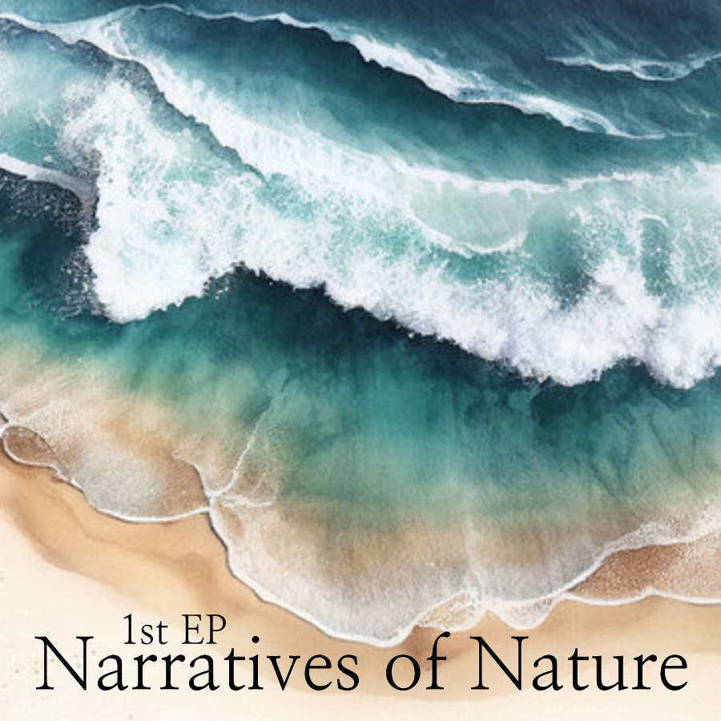

String Quartet No.1
String Quartet was inspired by an observation of people and their tendencies in a group setting. The piece was written in a palindromic form with canonical features and Lydian modal characteristics.
The Music Program at NYUAD, in collaboration with Chamber Music Abu Dhabi and the United States State Department, hosted an evening of performance by the Omer Quartet. The evening featured works composed by NYUAD student composers. The Omer Quartet also performed a list of selected works from their advanced repertoire of works written for string quartets.
00:11-02:55
02:55-04:34
02:55-04:34
1st Movement
2nd Movement
2nd Movement
Other Compositions for Pop, Chamber, and Experimental Music

1st EP: Narratives of Nature
Contact
Email : eunsu.music@gmail.com
YouTube : https://www.youtube.com/@eunsumusic
LinkedIn : https://www.linkedin.com/in/eunsuchoi/